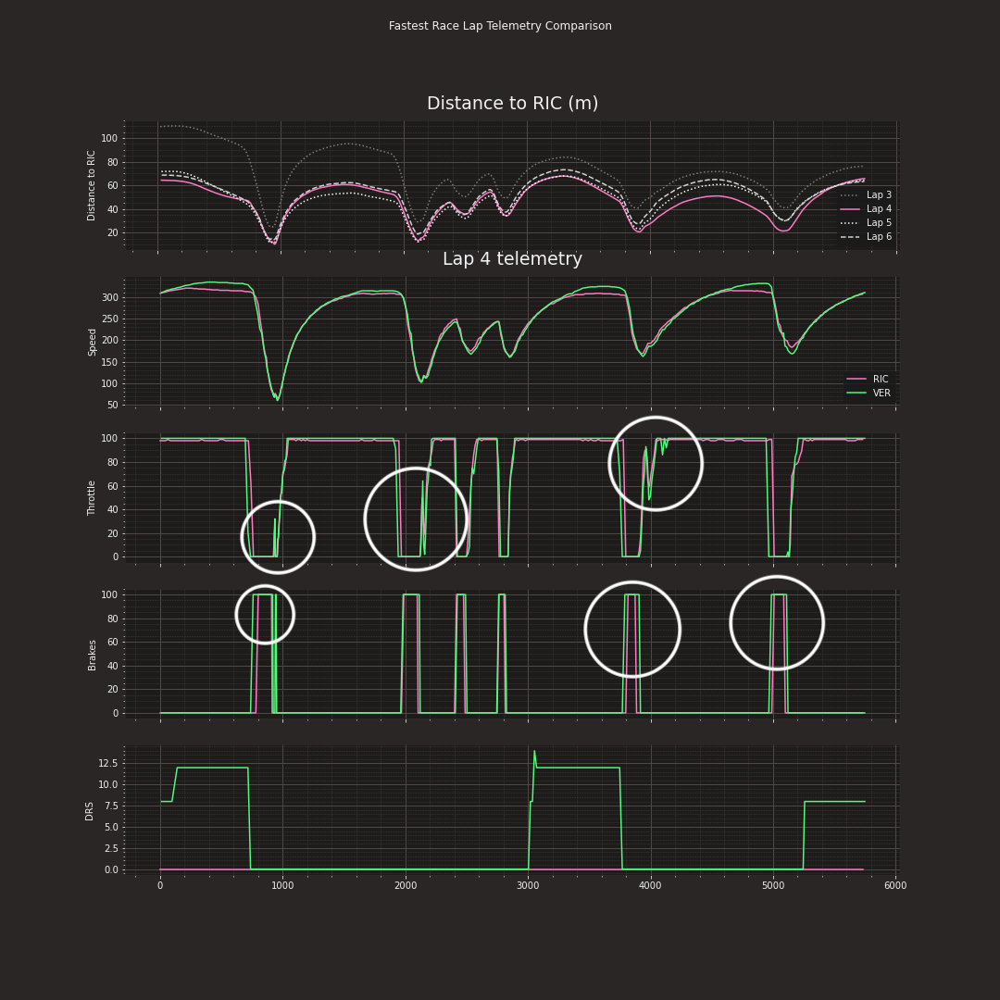
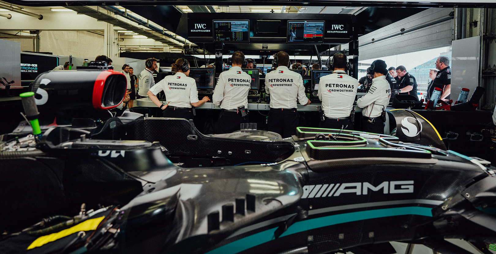

Throughout a Formula 1 weekend, numerous visualizations are broadcast, including driver comparisons, tire degradation, and head-to-head driver track dominance comparisons. In particular, these data visualizations help to deepen the viewer experience and enhance understanding.
Just as key to the race weekend is the data collection and strategizing beforehand. There are thousands of sensors on each F1 car that constantly report information back to the teams.
The numerous sensors have a wealth of uses including tracking:
This information is gathered during free practices, qualifying rounds, and during the race itself. The data is then sent back to the factories (thousands of miles away), where analysis is conducted in real-time to generate race strategies. The data is also utilized in the paddock during the race and may be communicated to the driver directly. These data analysis programs also allow for decisions to be madde based off of what other teams do - undercutting a pit stop, for example, can make or brerak a race. Ultiamtely, the race is won or lost based off of these strategic decisions made easier by data analysis.
